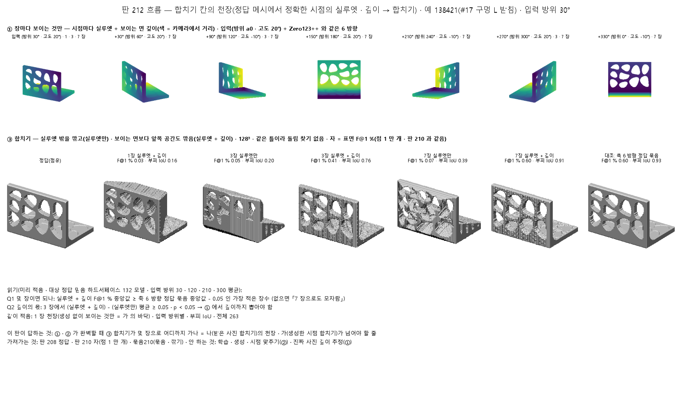

실험 m1_tr0212_h000_합치기
정확한 시점의 실루엣 · 깊이를 합치면 몇 장으로 어디까지 가나?
판정 · Q1 7 장으로도 모자람 · Q2 깊이 필요(정정: tr213)
정정(11-17 · tr213): 이 판의 합치기 코드는 여유 1.5 칸으로 표면을 부풀려 F@1 % 를 낮게 냈다(제 실수 · 같은 코드로 축 시점을 합치는 도구 대조가 없었음). 0.5 칸으로 고쳐 다시 잰 숫자: 3 장 0.490 → 0.568 · 7 장 0.551 → 0.629 · 9 장(위 · 아래 더함) 0.691 ≈ 축 6 방향 0.689. 아래 표는 고치기 전 숫자 그대로 둔다 →
하네스/실험/m1_tr0213_h000_시점배치/보고.md.
분석
한 줄로
물음: 사진마다 보이는 것(실루엣 · 깊이)을 완벽히 뽑고 시점도 정확히 안다면, 여러 장을 합쳐 모양이 어디까지 나오나? 몇 장이면 되나?
답: 깊이까지 합치면 3 장 0.49 · 7 장 0.55(하드서페이스 F@1 % 중앙)로, 축 6 방향 정답 묶음(0.69)에 7 장으로도 못 닿는다(Q1 「7 장으로도 모자람」). 실루엣만 합치면 7 장도 0.16 이라 장마다 깊이가 꼭 필요하다(Q2 +0.37 · p 2e-23). 한 장(보이는 것만)은 0.05 다.
왜 이 판을 했나
tr210 에서 사진 한 장 → 묶음을 통째로 배우면 덩어리 · 검색 수준이었다. 사용자 원칙(11-16 · 11-17): 안 보이는 면을 통째로 추측하지 않고, 장마다 보이는 것만 추론해서 합친다 — 가(한 장 → 다른 시점 · 단면을 생성해 합침) · 나(받은 여러 장을 합침) 둘 다. 두 길이 같이 쓰는 「합치기」 칸이 ① 장마다 뽑기 · ② 시점 맞추기가 완벽할 때 어디까지 가는지 먼저 쟀다(사용자 「1번만 하자고」).
바꾼 것 하나
입력을 「정답 메시에서 뽑은 정확한 시점의 실루엣 · 깊이」로 두고 장수와 합치는 정보만 바꿨다. 시점 = 입력(방위 a0 · 고도 20° · a0 30 · 120 · 210 · 300 네 개 평균) + Zero123++ 와 같은 6 방향(+30 · 90 · 150 · 210 · 270 · 330 · 고도 20 · −10 번갈아). 1 장 = 입력 · 3 장 = 입력 + 90 · 270 · 7 장 = 입력 + 6. 합치기 = 실루엣 밖을 깎기(실루엣만) · 보이는 면보다 앞 공간도 깎기(실루엣 + 깊이) · 128³. 대조 = 축 6 방향 정답 묶음(tr210 천장과 같은 것). 자 = tr210 과 같은 표면 점 1 만 개 F@1 % · 결과와 정답이 같은 틀이라 돌림 찾기는 안 함.
결과

| 하드서페이스 132 모델 · F@1 % 중앙(평균) | 실루엣만 | 실루엣 + 깊이 | 부피 IoU(깊이) |
|---|---|---|---|
| 1 장(입력만) | 0.052(0.056) | 0.054(0.059) | 0.23 |
| 3 장 | 0.099(0.116) | 0.490(0.490) | 0.65 |
| 7 장 | 0.159(0.201) | 0.551(0.567) | 0.75 |
| 대조: 축 6 방향 정답 묶음 | 0.689(0.683) | — |
| 통과선 | 값 | 판정 |
|---|---|---|
| Q1 실루엣 + 깊이 ≥ 축 6 중앙 − 0.05(= 0.639) 인 가장 적은 장수 | 7 장 0.551 | 7 장으로도 모자람 |
| Q2 3 장 (실루엣 + 깊이) − (실루엣만) ≥ 0.05 · p < 0.05 | +0.374 · p 2.1e-23 | 깊이 필요 |
전체 263 모델도 같은 방향(축 6 0.726 · 3 장 0.529 · 7 장 0.611 · 1 장 0.058). 입력 방위(30 · 120 · 210 · 300)에 따른 차이는 0.002 안 — 입력 방향에 둔감.
왜 이렇게 나왔나
확인한 것
- 실루엣만으로는 오목한 곳 · 구멍 안 · 판 사이가 다 메워진다(흐름 예: 7 장 실루엣만 부피 IoU 0.39) — 장마다 깊이가 정보의 대부분이다(+0.37).
- 한 장은 보이는 면 뒤를 끝까지 채운 덩어리다(0.05 · 부피 IoU 0.23) — 아무 추론 없이 보이는 것만으로 얻는 바닥이다. 가(생성) 길은 이 바닥에서 출발해 생성한 시점으로 0.49~0.55 쪽으로 가야 한다.
짐작 (아직 확인 안 함)
- 7 장이 축 6 방향에 못 미치는 까닭은 시점 배치일 수 있다: 7 장은 고도 20 · −10 뿐이라 위 · 아래에서 본 깊이가 없고, 축 정렬이 아니라 물체의 평평한 면을 비스듬히만 본다. 위 · 아래 한 장씩 더하면 닿는지는 안 쟀다.
- 비스듬한 시점의 깊이 깎기는 화소(256²) · 칸(128³) 사이 어긋남을 1.5 칸 틈으로만 메운다 — 그 오차도 일부일 수 있다.
한계
- ① 장마다 뽑기 · ② 시점 맞추기가 완벽하다고 둔 천장이다 — 진짜 사진의 깊이 추정 · 시점 오차는 없다.
- 정사영 카메라 · 같은 틀 채점(돌림 찾기 없음)이라 tr210 의 「돌림 24 중 최선」 숫자(ㄱ 0.110 등)와 바로 비교하면 안 된다.
- 결정적 계산 · 한 번 돌림. 첫 돌림은 제 실수로 병렬 함수에 모델 이름을 두 번 넘겨 263 개 모두 인자 오류 → 고쳐 다시 돌림(통과선 · 자 그대로).
배운 것과 다음
합치기 칸은 장마다 깊이가 있어야 서고(실루엣만은 0.16), 7 장이면 축 6 방향 정답 묶음의 80 %(0.55 / 0.69)까지 간다 — 가 · 나 길의 천장은 이 줄이다.
- 시점 배치: 위 · 아래 시점을 더하거나 축 정렬 시점을 섞으면 7 장 → 축 6 수준에 닿는지(학습 없음 · 짧음).
- 가: Zero123++ 생성 시점(씨앗 여러 개)을 ① 에 넣어 이 천장(같은 시점 배치)과 비교 — 생성한 시점이 진짜 시점을 얼마나 대신하나.
- 나: 원화CAD짝 모델당 사진 2 장 남짓으로 ② 시점 맞추기부터.
판 기록
- 통과선 커밋 98a72f9(돌리기 전) · 코드
원화3d/실험_20261013/캐드부품/합치기212.py· 판정 원문잼.json· 모델별out/설명/캐드부품/모델212/잼_모델별.json(git 밖) - 대상: tr208 정답 믿음 모델 263(하드서페이스 132 = tr211 목록과 같은 모델) · 정답 tr208 메시 · 묶음 · 깎기는 묶음210